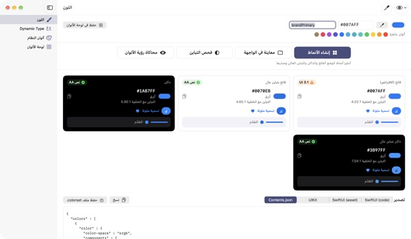
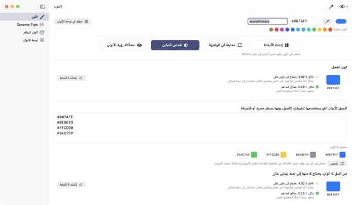
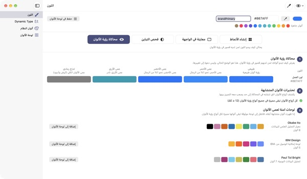
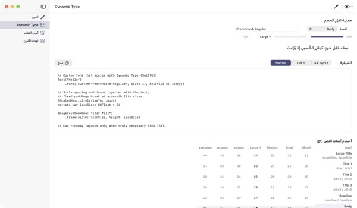

لون واحد
بأربعة أوضاع
ألوان النظام تتبدل وحدها مع الوضع الداكن وزيادة التباين، أما ألوان علامتك فتبقى كما هي. يشتق TetraTint من لون فاتح واحد أنماط الفاتح، والفاتح بتباين عالٍ، والداكن، والداكن بتباين عالٍ، ويصدّرها مباشرة إلى Xcode.
ابدأ مجانًا، واختر Plus أو Pro إن احتجت المزيد. يتطلب macOS 14 أو أحدث.

جرّب لون علامتك
الصق قيمة hex أو اختر لونًا جاهزًا. بالحساب نفسه الذي يستخدمه التطبيق تظهر الأنماط الأربعة وتباينها مع الخلفية فورًا.
هل اختفى لون علامتك يومًا في الوضع الداكن؟
الأزرق الذي اخترته للوضع الفاتح يبدو باهتًا على الخلفية السوداء، ومن يشغّل زيادة التباين يجد صعوبة في قراءة النص. البحث يدويًا عن لون لكل وضع وقياس التباين بالآلة الحاسبة يستهلك نصف يوم. يشتق TetraTint الأنماط على طريقة تغيّر ألوان النظام بين الأوضاع، ويريك في مكانه هل يجتاز كل نمط المعيار.
افحص كل ألوانك دفعة واحدة
الصق قائمة رموز hex التي يستخدمها تطبيقك كاملة، فيحكم على كل لون: صالح كما هو، أو يحتاج إلى نمط بتباين عالٍ، أو للزينة فقط.
وبنقرة واحدة تنشئ الأنماط الأربعة لأي لون فيه مشكلة وتحفظها في لوحتك. ويفيدك ذلك مباشرة عند تجهيز بند التباين الكافي في ملصق إمكانية الوصول على App Store.

انظر بعيون من لديهم قصور في رؤية الألوان
يحاكي كيف تبدو لوحتك مع عمى الأحمر والأخضر والأزرق والتدرج الرمادي، وينبهك إلى أزواج الألوان التي تتشابه حتى يصعب التمييز بينها.
أضف لوحات Okabe Ito وIBM وPaul Tol الآمنة لعمى الألوان بنقرة، أو عاين التطبيق كله بحالة قصور رؤية الألوان من أيقونة العين في الشريط العلوي.

خطك المخصص يتبع حجم النص أيضًا
تصفح جدول أحد عشر نمطًا للنص في سبعة أحجام، وغيّر الحجم بشريط التمرير لترى المقاس الفعلي.
أدخل اسم PostScript لخطك فيكتب لك شيفرة UIKit وSwiftUI و@ScaledMetric، وشيفرة تغيير التخطيط في الأحجام الكبيرة.

ثلاث خطوات للبدء
- 1
أدخل اللون الأساسي
الصق قيمة hex، أو التقط لونًا من أي مكان على الشاشة بالقطّارة، أو اختر لونًا جاهزًا.
- 2
راجع الأنماط الأربعة
تابع التباين من الشارات، واضبط بمنتقي الألوان أي نمط لا يناسب هوية علامتك.
- 3
صدّر إلى Xcode
انسخ أو احفظ النتيجة بصيغة Contents.json أو ملف colorset أو شيفرة UIKit أو SwiftUI.
قواعد اشتقاق الأنماط ومعنى الشارات
- فاتح (الافتراضي)
- اللون الذي أدخلته كما هو
- فاتح بتباين عالٍ
- تشبع أعلى قليلًا، ويُغمَّق حتى يبلغ تباينه 4.5:1 مع الخلفية البيضاء
- داكن
- أفتح وأزهى قليلًا (السطوع +5، التشبع +3)
- داكن بتباين عالٍ
- يُفتَّح حتى يبلغ تباينه 7:1 مع الخلفية السوداء
- نص AA
- تباين 4.5:1 أو أكثر مع الخلفية، يصلح للنص العادي
- UI 3:1
- 3:1 أو أكثر، يصلح للأزرار والأيقونات لا للنص
- منخفض
- أقل من 3:1، لا تستخدمه للنص أو الأيقونات أو عرض الحالة
- التصدير
- Contents.json وcolorset وUIKit وSwiftUI، واللوحة كاملة في ملف xcassets واحد
قيم ألوان النظام المرجعية مأخوذة من إرشادات واجهة المستخدم البشرية من Apple وقد تتغير مع تحديثات النظام. استخدم واجهات ألوان النظام في تطبيقك الفعلي.
أسئلة شائعة
هل التطبيق مجاني؟
يمكنك البدء مجانًا. إنشاء الأنماط الأربعة للون واحد، وفحص تباين لون واحد، ونسخ hex والشيفرة، وجدول Dynamic Type وألوان النظام، ولوحة حتى 6 ألوان، كلها مجانية بلا حساب ولا إعلانات. ويضيف Plus وPro، بالاشتراك أو بالشراء مرة واحدة، فحص التباين بالجملة ومحاكاة رؤية الألوان وتصدير ملفات colorset وxcassets وغيرها. لا تفتح الإكرامية من الإعدادات أي ميزة.
الأنماط التلقائية لا تناسب هوية علامتي.
عدّل كل نمط على حدة بمنتقي الألوان في بطاقته. وزر «إعادة إنشاء الكل» يتجاهل تعديلاتك اليدوية ويعيد الاشتقاق من اللون الأساسي.
على أي أساس تُشتق الأنماط؟
تتبع النمط الفعلي الذي تتغير به ألوان نظام Apple بين الأوضاع: أفتح وأزهى قليلًا في الداكن، وتباين يتجاوز 4.5:1 مع الأبيض في الفاتح عالي التباين، و7:1 مع الأسود في الداكن عالي التباين.
ماذا يعني تحذير محاكاة رؤية الألوان؟
يعني أن الفرق بين لونين (ΔE) صار أقل من 12 في المحاكاة، فيصعب التمييز بينهما. لا تعتمد على اللون وحده لتمييز الحالة، بل أضف أيقونات أو أنماطًا أو تسميات، أو انتقل إلى لوحة آمنة.
كيف أطبق Dynamic Type على خط مخصص؟
أدخل اسم PostScript للخط في شاشة Dynamic Type واختر النمط، فتظهر شيفرة UIKit وSwiftUI و@ScaledMetric. في أحجام تسهيلات الاستخدام يكبر Body إلى أكثر من ثلاثة أضعاف حجمه الافتراضي، فتجنب الارتفاع الثابت وlineLimit(1).
اللون المصدَّر يبدو مختلفًا عن لون النظام في تطبيقي.
قيم ألوان النظام المرجعية مأخوذة من وثيقة الإرشادات وقد تختلف بين إصدارات النظام. استخدم دائمًا واجهة UIColor أو Color لألوان النظام.
أين تُحفظ لوحتي؟
على هذا الـ Mac فقط، ولا تُرسل إلى أي مكان. التفاصيل في سياسة الخصوصية.
هل يُحفظ اللون الذي ألتقطه بالقطّارة؟
لا. يقرأ التطبيق قيمة لون النقطة التي تشير إليها فقط ويجعلها لون العمل، ولا يحفظ صورة الشاشة ولا يرسلها.
على أي Mac يعمل؟
يعمل على macOS 14 (Sonoma) أو أحدث. عند التصدير تختار بنفسك مكان حفظ الملف.
أرسل بلاغات الأخطاء واقتراحات الميزات وأسئلة الاستخدام إلى leeo@kakao.com. نرد عادةً خلال يومين إلى ثلاثة أيام.